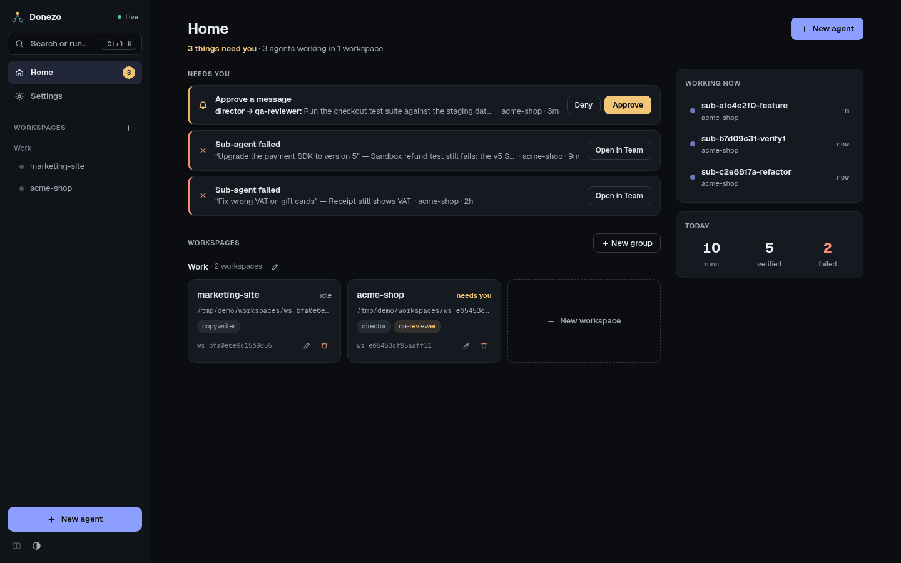
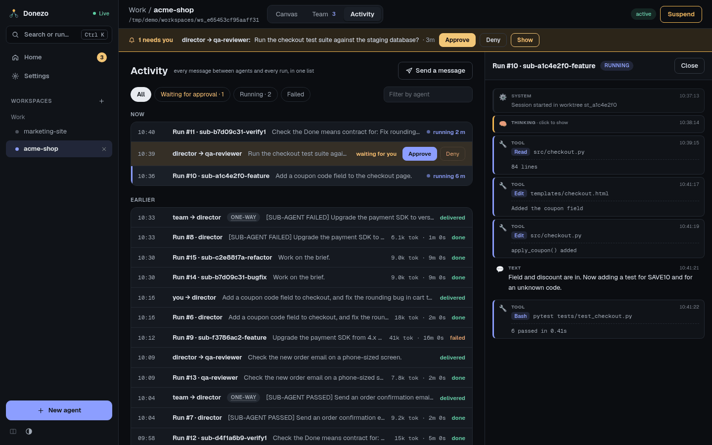

Staying in control
See what needs you, read what agents did, and stop them when you need to.
Home inbox

Needs you collects two kinds of item from all workspaces. The number in the sidebar counts them.
- Approve a message: an agent's message is waiting. Press Approve or Deny right there.
- Sub-agent failed: Open in Team takes you to the card. The item leaves the list while Verify again runs and comes back if that check fails. It is gone for good once a check passes or you press Discard on that card. A failed Reflect has no card, so its item stays in the list.
Other messages from agents do not appear here. A director tells you things in its own terminal, so keep an eye on it.
The side column shows Working now, which agents are running, and Today,
the counts of runs, verified work and failed work. Below the inbox, each workspace card says
needs you, how many are running, or idle.
Approvals
A message needs approval when its sender asks for it: an agent marks a message as sensitive, or you tick Requires approval under More options in Send a message. It then waits. It does not run until someone approves it.
You can answer in several places:
- on Home, under Needs you;
- in the amber strip across the top of the workspace, where Show also jumps to the receiving agent's card;
- in Activity, under Waiting for approval;
- in the command palette, where choosing the row approves it.
A receiving card wears a needs you badge in the meantime. A denied message stays in Activity and can be run later with ↻ Re-run.
Activity
The Activity tab of a workspace is one list of every message between agents and every run. Items still in motion are under Now, the rest under Earlier.

- Filter: All, Waiting for approval, Running, Failed, or the Filter by agent box.
- Read a run: click it. The transcript shows thinking, tool calls with their results, and text. The row shows tokens used and how long it took.
- Messages: ↻ Re-run appears on failed, denied or blocked ones, and Delete on failed ones. one-way means no reply is expected.
- Send a message: Send a message lets you pick an agent and write to it. Plain text or JSON both work.
- Older items: Show older loads more.
Some automatic messages the orchestrator sends agents are currently written in Vietnamese, such as the
[BOOTSTRAP SKILL …] one on an agent's first run. You do not need to act on them.
Guard rails
All of these run without you doing anything, unless a default says "off". Variables go in your
.env file.
| Guard | What it does | Set with |
|---|---|---|
| Ping-pong cap | Two agents may exchange 2 messages per task; further sends are refused, and the agent is told to report to you. The count resets when you give either one new work, or after 60 minutes of silence. See Signal budget in the agent's panel. | ORCH_PAIR_SIGNAL_CAP, ORCH_PAIR_SIGNAL_WINDOW_MIN |
| One prompt per agent | Queues messages, so a conversation is never written by two runs at once. | Always on |
| Runs at once | At most 3 background runs at the same time across the app. | ORCH_MAX_CONCURRENT |
| Daily run limit | Off by default. Once reached, messages to that agent are blocked. Allow + in its panel adds 10 more runs for today and puts those messages back in the queue. | ORCH_MAX_RUNS_PER_DAY, ORCH_DAILY_ALLOW_STEP |
| Lifetime limits | Off by default. A total number of runs or tokens per agent; beyond it, messages are blocked. | ORCH_MAX_RUNS_PER_SESSION, ORCH_SESSION_TOKEN_BUDGET |
| Fix attempts | Failed verifications before a sub-agent's work is marked failed: 3. | ORCH_SUBTASK_MAX_ATTEMPTS |
| Who may message whom | Optional allow-list per workspace. | Team rules |
| Your machine only | Listens on 127.0.0.1 and refuses requests from other websites. Read the security warning before changing this. | ORCH_HOST |
Kill switch: how to stop things
| Control | Where | What happens |
|---|---|---|
| Stop button | Left strip of a card, only while a job is running. Its tooltip reads Kill the running job (stops a runaway). | After you confirm, the run is killed, marked failed, and not retried. |
| Pause / Resume | Left strip of a card | While paused, messages to that agent wait. Resume runs them. |
| Suspend / Activate | Top right of a workspace | While suspended, messages in that workspace wait and no new agents can be created. A job already running is not killed; use the stop button for that. Activate runs what waited. |
| Cancel | A card on the Team tab | Stops one sub-agent's work and tells the director. |